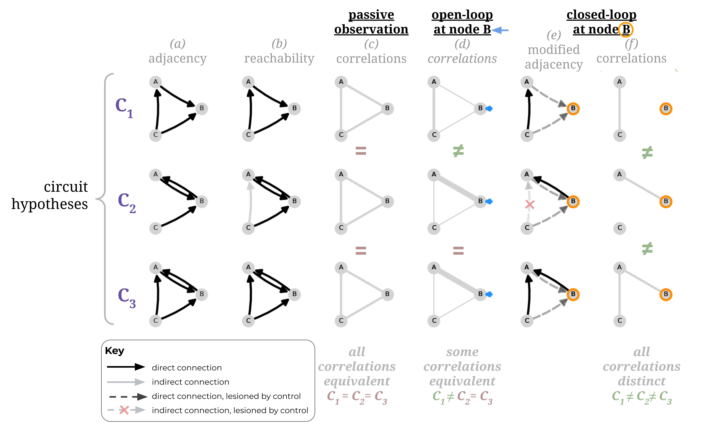
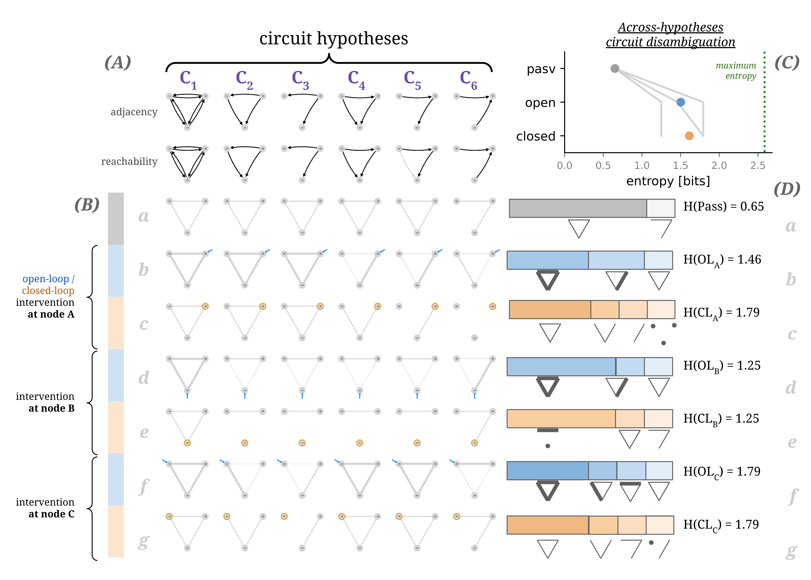

Abstract
The necessity of intervention in inferring cause has long been understood in neuroscience. Recent work has highlighted the limitations of passive observation and single-site lesion studies in accurately recovering causal circuit structure. The advent of optogenetics has facilitated increasingly precise forms of intervention including closed-loop control which may help eliminate confounding influences. However, it is not yet clear how best to apply closed-loop control to leverage this increased inferential power. In this paper, we use tools from causal inference, control theory, and neuroscience to show when and how closed-loop interventions can more effectively reveal causal relationships. We also examine the performance of standard network inference procedures in simulated Gaussian networks under passive, open-loop and closed-loop conditions. We demonstrate a unique capacity of feedback control to distinguish competing circuit hypotheses by disrupting connections which would otherwise result in equivalent patterns of correlation. We also demonstrate the increased range of correlations achievable under closed-loop intervention, leading to increased signal-to-noise ratio for connection-related measures. Our results build toward a practical framework to improve design of neuroscience experiments to answer causal questions about neural circuits.
Introduction
Estimating causal interactions in the brain
Many hypotheses about neural circuits are phrased in terms of causal relationships: “will changes in activity to this region of the brain produce corresponding changes in another region?” Understanding these causal relationships is critical to both scientific understanding and to developing effective therapeutic interventions, which require knowledge of how potential therapies will impact brain activity and patient outcomes.
Inferring causal interactions from time series. A number of strategies have been proposed to detect causal relationships between observed variables. Wiener-Granger (or predictive) causality states that a variable \(X\) “Granger-causes” \(Y\) if \(X\) contains information relevant to \(Y\) that is not contained in \(Y\) itself or any other variable (Wiener 1956). This concept has traditionally been operationalized with vector autoregressive models (Granger 1969); the requirement that all potentially causative variables be considered makes these notions of dependence susceptible to unobserved confounders (Runge 2018).
A key methodological differences between approaches for causal inference from time-series is the choice of linear-Gaussian versus nonlinear measures of dependence (e.g. Granger causality Schreiber (2000); Barnett, Barrett, and Seth (2009) versus transfer entropy Bossomaier et al. (2016)). Another key difference lies in the choice of what signals to condition on. Bivariate cross-correlation methods look at the correlation of time series collected from pairs of nodes at various lags and detect peaks at negative time lags. Such peaks could indicate the presence of a direct causal relationship – but they could also stem from indirect causal links or hidden confounders (Dean and Dunsmuir 2016). In these bivariate correlation methods, it is thus necessary to consider patterns of correlation between many pairs of nodes in order to differentiate between direct, indirect, and confounding relationships (Dean and Dunsmuir 2016). This distinguishes these strategies from some multivariate methods that “control” for the effects of potential confounders. For example, multivariate conditional transfer entropy approaches use various variable selection schemes which can differentiate between direct interactions, indirect interactions, and common causes, but their results depend on choices such as the binning strategies used to discretize continuous signals, the specific statistical tests used, and the estimator used to compute transfer entropy (Wibral, Vicente, and Lizier 2014; Wollstadt et al. 2019).
However, despite their mathematical differences, previous work has found that cross-correlation-based metrics and information-based metrics tend to produce qualitatively similar results, with similar patterns of true and false positives (Garofalo et al. 2009). In this work, we focus on the simplest approach for discovering interactions from time-series which is to threshold correlations between node outputs. See # Future Work for discussion of extending this approach to more sophisticated inference approaches.
Interventions in neuroscience & causal inference
A range of mathematical and practical challenges make it difficult to determine these causal relationships. In studies that rely only observational data, it is often impossible to determine whether observed patterns of activity are caused by known and controlled inputs, or whether they are instead spurious connections generated by recurrent activity, indirect relationships, or unobserved “confounders.” It is generally understood that moving from experiments involving passive observation to more complex levels of intervention allows experimenters to better tackle challenges to circuit identification. However, while chemical and surgical lesion experiments have historically been employed to remove the influence of possible confounds, they are likely to dramatically disrupt circuits from their typical functions, making conclusions about underlying causal structure drawn from these experiments unlikely to hold in naturalistic settings (Chicharro and Ledberg 2012).

Figure INTRO: Roles interventions have played in understanding structure and function in neuroscience. (A) Passive observation involves recording signals without stimulating the brain. In this example, observational data is used to identify patients suffering from absence seizures (Smith 2005). (B) Open-loop stimulation involves recording activity in the brain while perturbing a region with a known input signal. Using systematic open-loop stimulation experiments, Penfield uncovered the spatial organization of how senses and movement are mapped in the cortex (W. Penfield and Boldrey 1937; Wilder Penfield and Rasmussen 1950). (C) Closed-loop control uses feedback control to precisely specify activity in certain brain regions regardless of activity in other regions. Using closed-loop control (voltage clamp), Hodgkin, Huxley, and Katz were able to dissect the recurrent ion channel dynamics of the action potential by functionally lesioning the impact of individual ion channels (Cole 1949; A. L. Hodgkin and Katz 1949; A. L. Hodgkin, Huxley, and Katz 1952).
The role of intervention in neuroscience Despite
these challenges, neuroscientists have made progress in understanding
the brain through various approaches. One way in which these approaches
differ is in terms of their use of recording and stimulation
(Fig. INTRO). Recording from the brain (passive
observation) and analyzing those data for patterns can tell us
which regions may be involved in a particular behavior. For instance,
electroencepahlograms (EEG) can help reveal the hidden storm of
electrical activity that underlies epileptic seizures, providing clues
as to its origin and classifying its type (Smith 2005). In addition, perturbing
the brain through stimulation (open-loop intervention)
can help understand whether activity in one region is sufficient to
produce some downstream effect. For instance, Wilder Penfield stimulated
different regions of the brain with electricity in order to assess safe
sites for surgical treatment of epilepsy. Through these systematic
stimulation experiments, he was able to uncover the spatial organization
of how senses and movement are mapped in the cortex (W. Penfield and
Boldrey 1937; Wilder Penfield and Rasmussen 1950). Similarly
Hubel and Wiesel delivered precise patterns of sensory stimulation in
the form of patterns of light in order to characterize the function of
the visual system (Hubel and Wiesel
1959, 1962). These open-loop approaches are especially adept at
demonstrating cause and effect in “feedforward” chains of information
processing within the brain.
However, in many circuits and at several scales, the brain is
connected back on itself in reciprocal loops. In these systems, the
effect of stimulation can reverberate through a circuit blurring the
direction of cause and effect. In addition, unobserved sources of
variability mean responses of the brain to the identical inputs can be
context dependent and differ from trial to trial. For such systems,
closed-loop interventions - that is, adapting inputs to
a system based on measurements in order to drive the system’s state
toward a target - have proved invaluable in isolating function and
removing outside disturbances. Hodgkin, Huxley, and Katz used a
closed-loop technique, voltage clamp, to dissect the recurrent ion
channel dynamics of the action potential by functionally lesioning the
impact of individual ion channels (Fig. INTRO, Cole (1949); A. L. Hodgkin and Katz
(1949); A. L. Hodgkin, Huxley, and Katz
(1952)). Subsequently, dynamic-clamp experiments have used
precise intracellular measurements and mathematical models to predict
currents which allow for causally manipulating ongoing dynamics (Sharp
et al. 1993; Prinz, Abbott, and Marder 2004).
In both of these settings, a key advantage of closed-loop control is that a tightly coupled set of factors are simplified by holding some constant and thereby removing their effect on the variables being studied. An alternative approach, used successfully throughout neuroscience is to lesion (e.g. chemically or surgically) inputs from other regions. While chemical and surgical lesion experiments have historically been employed to remove the influence of possible confounds, they are likely to dramatically disrupt circuits from their typical functions, making conclusions about underlying causal structure drawn from these experiments unlikely to hold in naturalistic settings (Chicharro and Ledberg 2012; Wolff and Ölveczky 2018; Vaidya et al. 2019; Valero-Cabré et al. 2020).
The role of intervention in causal inference Data collected from experimental settings can provide more inferential power than observational data alone. For example, consider an experimentalist who is considering multiple causal hypotheses for two nodes under study, \(x\) and \(y\): the hypothesis that \(x\) is driving \(y\), the hypothesis that \(y\) is driving \(x\), or the hypothesis that the two variables are being independently driven by a hidden confounder. Observational data revealing that \(x\) and \(y\) produce correlated time-series data is equally consistent with each of these three causal hypotheses, providing the experimentalist with no inferential power. Experimentally manipulating \(x\) and observing the output of \(y\), however, allows the scientist to begin to establish which causal interaction pattern is at work. Consistent with intuition from neuroscience literature, a rich theoretical literature has described the central role of interventions in inferring causal structure from data (Pearl 2009; Eberhardt and Scheines 2007).
The inferential power of interventions is depends on where stimulation is applied: interventions on some portions of a system may provide more information about the system’s causal structure than interventions in other areas. And interventions are also more valuable when they more effectively set the state of the system: “perfect” closed-loop control, which completely severs a node’s activity from its inputs, are often more informative than “soft” interventions that only partially control a part of the system (Eberhardt and Scheines 2007).
The challenge of designing intervention experiments. In experimental neuroscience settings, experimenters are faced with deciding between interventions that differ in both location and effectiveness. For example, stimulation can often only be applied to certain regions of the brain. And while experimenters may be able to exactly manipulate activity in some parts of the brain using closed-loop control, in other locations it may only be possible to apply weaker forms of intervention that perturb a region but do not manipulate its activity exactly to a desired state. In Section # impact of intervention, we compare the effectiveness of open-loop, closed-loop, and partially-effective closed-loop control.
Although algorithms designed to choose optimal interventions are often designed for simple models with strong assumptions,1 they provide intuition that can aid practitioners seeking to design real-world experiments that provide as much scientific insight as possible. Importantly, the informativeness of interventions is often independent of the algorithm used to infer causal connections, meaning that certain interventions can reveal portions of a circuit’s causal structure that would be impossible for any algorithm to infer from only observational data (Das and Fiete 2020). We similarly expect the results we demonstrate in this paper to both inform experimentalists and open avenues for further research.
Despite the promise of these closed-loop strategies for identifying causal relations in neural circuits, however, it is not yet fully understood when more complex intervention strategies can provide additional inferential power, or how these experiments should be optimally designed. In this paper we demonstrate when and how closed-loop interventions can reveal the causal structure governing neural circuits. Drawing from ideas in causal inference (Pearl 2009; Maathuis and Nandy 2016; Chis, Banga, and Balsa-Canto 2011), we describe the classes of models that can be distinguished by a given set of input-output experiments, and what experiments are necessary to uniquely determine specific causal relationships.
We first propose a mathematical framework that describes how open- and closed-loop interventions impact observable qualities of neural circuits. Using this framework, experimentalists propose a set of candidate hypotheses describing the potential causal structure of the circuit under study, and then select a series of interventions that best allows them to distinguish between these hypotheses. Using simplified in silico networks, we explore factors that govern the efficacy of these types of interventions. Guided by the results of this exploration, we present a set of recommendations that can guide the design of open- and closed-loop experiments to better uncover the causal structure underlying neural circuits.
Results
To understand general principles of how intervention influences circuit inference, we simulated networks of nodes with linear interactions. Each node abstractly represents a population of neurons, and is driven by “private” independent Gaussian noise sources as well as weighted inputs from other connected nodes. Connections between nodes are represented, equivalently, as an adjacency matrix and a directed graph (see Fornito, Zalesky, and Bullmore (2016), Methods # representations & reachability). Open-loop intervention is simulated to mimic current injection from an external source, and by default has amplitudes sampled at each timestep from a Gaussian distribution (see Methods # implementing interventions). We describe the impact of intervention in terms of its influence on the observed patterns of pairwise correlation, and for closed-loop control also in terms of its modifications to the effective connectivity of the network (see Methods # predicting correlation). While this linear Gaussian network simplifies away several features of biophysical networks of spiking neurons, we believe it provides a reasonable and tractable theoretic foundation for building towards understanding more complex systems (see Discussion # spiking networks for a discussion of broader modeling assumptions such as spiking and time-lagged interactions).
These networks are simulated over time, and pairwise correlations are quantified as a basic measurement of statistical dependence. While more sophisticated inference procedures are commonly applied in neuroscience, studying key properties such as shaping across-node dependence should illustrate principles which generalize across inference methods. In particular, we use these networks to illustrate the process of designing and conducting experiments with interventions to discover neural circuitry. We start by walking through an example of using correlations to distinguish between 3 circuit hypothesis. Then we distill this process into a general recipe for an identification experiment. This recipe is then applied to a more general problem of choosing where and how to intervene to decided between a set of candidate circuit hypotheses. We demonstrate cases where closed-loop control provides categorical and quantitative advantages for such experiments.
Demonstrating interventions and circuit inference

Figure DEMO : Applying CLINC to distinguish a trio of circuits. (a) Connectivity for three different hypothesized circuits represented as a directed graph. This representation captures only the direct causal connections between nodes (also know as adjacency) and is what an experimenter may seek to infer from data. (b) Network reachability illustrates direct connection in black (as in a), but also the directional influence of indirect connections in grey. This representation forms the basis of predicting observed correlations, and the impact of interventions (see Methods # representations & reachability). (c) Pairwise correlations under passive observation. For these circuit hypotheses each node is connected directly or indirectly to each other node, leading to an all-to-all pattern of correlation which makes circuit identity difficult to distinguish. (d) Pairwise correlations under open-loop intervention at node B. Interventions can increase or decrease pairwise correlations (illustrated with thick and thin line weights) which provides some information about the directions of influence within a circuit. (e) Effective connectivity under closed-loop intervention at node B. Closed-loop control effectively lesions the inputs to the controlled node by driving that node to a specified target. This modifies the causal influences in the circuit (dashed dark arrows), and also interrupts any paths of indirect influence traveling through this node (illustrated with a red X over a dashed grey connection). (f) Pairwise correlations under closed-loop intervention at node B. As a result of the lesioned direct and indirect connections, resulting correlations are sparser and more distinct across hypotheses.
Consider the circuit identification problem shown in the
Figure DEMO, in which an experimenter has identified three
hypotheses for the causal structure of a three-node circuit. By
quantifying pairwise measures of dependency, and comparing to the
expected pattern produced under each hypothesis, this hypothesis set can
be narrowed to only those consistent with the observed data. However,
for some hypothesis sets and experimental conditions, several circuits
may lead to equivalent pairwise correlations ( column (c), passive
observation). Intervention may modify observed dependencies in a way
which leads to more distinct outcomes, allowing the hypothesis set to be
further reduced.
These circuit hypotheses, shown as directed graphs in column (a), can each be represented by an adjacency matrix (Methods # reachability & representation). For example, circuit \(C_1\) is represented by an adjacency matrix in which entries \(w_{A→B}\), \(w_{C→A}\), and \(w_{C→B} \neq 0\). Note that hypotheses \(C_1\) and \(C_3\) have direct connections between nodes A and C. While hypothesis \(C_2\) does not have a direct connection between these nodes an indirect connection exists through the path C \(\to\) B \(\to\) A (shown as a solid gray arrow in column (b)). This indirect influence can be quantified and predicted using the the weighted reachability matrix \(\widetilde{W}\) illustrated as a directed graph in column (b).
Because there are direct or indirect connections between each pair of nodes, passive observation of each hypothesized circuit would reveal that all nodes are correlated with each other ( column (c)). These three hypotheses are therefore difficult to distinguish for an experimentalist who performs only passive observation.
Open-loop stimulation is commonly applied to help understand the
direction of causal influence in circuits.
Fig. DEMO, column (d) shows the impact on observed
correlations of performing open-loop control on node B. In hypothesis
\(C_1\), node B is not a driver of
other nodes, so open-loop stimulation at this site will introduce
connection-independent noise which reduces its correlation with nodes
which influence it. However, the connection from node B to A in
hypotheses \(C_2\) and \(C_3\), leads to open-loop stimulation at
node B to add shared variance between B and its downstream targets, and
therefore increases the observed correlation between nodes B
and A (see Methods # intervention
variance). An experimenter can thus distinguish between hypothesis
\(C_1\) and the other two hypotheses by
applying open-loop control and observing the resulting pattern of
correlations (column (d)). However, this pattern of open-loop
stimulation would not allow the experimenter to distinguish between
hypotheses \(C_2\) and \(C_3\).
Closed-loop control (columns (e) and (f)) can provide the experimenter with even more inferential power. Column (e) shows the resulting adjacency matrix when closed-loop control is applied to node B. In each hypothesis, the result of this closed-loop control is to remove the impact of other nodes on node B. These severed connections are depicted in column (e) by dashed lines. Under hypothesis \(C_2\), this also results in the elimination of the indirect connection from node C to node A. The application of closed-loop control at node B thus results in a different observed correlation structure in each of the three circuit hypotheses (column (f)). This means that the experimenter can therefore distinguish between these circuit hypotheses by applying closed-loop control, a result not possible with passive observation or open-loop control.
This example illustrates some key steps in circuit identification, and some of the differences in inferential power different interventional experiments provide. However, in the next section, we codify this process into a general set of steps or recipe for circuit inference. We then apply this approach more broadly to explore the impact of intervention in more detail.
Steps of inference

Figure OVERVIEW: Components of a circuit identification experiment. The ground-truth or hypothesized circuit can be represented either as a graph depicting connections between nodes or, equivalently, as an adjacency matrix (Fornito, Zalesky, and Bullmore 2016). While the adjacency matrix describes the direct causal relationships, it’s useful to understand the net direct and indirect effect of nodes on each other, called reachability. This reachability representation is key for predicting observed correlations, as well as the impact of intervention. The generative model for this network describes how connections and sources of variance contribute to network dynamics, and observed time-series data (either simulated or measured in vivo). From these time-series, pairwise dependence can be measured through quantities like correlation coefficients. Alternately, in the design phase, correlations can be predicted directly from the intervention-adjusted reachability matrices. Circuit inference typically consists of thresholding or statistical tests to determine significant connections to reconstruct an estimated circuit.
We envision the structure of a set of experiments to identify a circuit through intervention to include the following broad stages:
First, explicitly enumerate the set of hypothesized circuits.
Hypotheses about the structure of the circuit are often based on
multiple sources of information including prior recordings, anatomical
constraints revealed by tract tracing experiments, or commonly observed
connectivity patterns in other systems. These hypotheses should be
expressed as a set of circuits (adjacency matrices,
Fig. OVERVIEW circuit) each with a probability
representing the prior belief about the relative likelihood of these
options. This hypothesis set can be thought of as a space of possible
explanations for the observed data so far, which will be narrowed down
through further intervention, observation, and inference (see also
Fig. DISAMBIG (A)).
Second, forecast patterns of correlation which could result from
applying candidate interventions. Most algorithms for circuit inference
quantify and threshold measures of dependence between pairs of nodes.
Correlations are often used to measure the linear component of
dependence between outputs of two nodes, although the approach described
here should generalize to other nonlinear measures of dependence such as
mutual information. As such, the observed pattern of dependence
(correlations) in a given experiment summarizes the input to an
inference procedure to recover an estimated circuit.
A detailed forecast of the observed outputs could be achieved by
simulating biophysical networks across candidate interventions and
hypothesized ground-truth circuits. However, for large networks or large
hypothesis sets this may be expensive to compute. Instead, for the sake
of rapid iteration in designing interventions, we propose using the
reachability representation of a linear (or linearized) network to
succinctly and efficiently predict the observed correlationsacross
nodes. The methods described in Methods #
predicting correlations allow us to anticipate how open and
closed-loop interventions across nodes in the network might increase,
decrease, or sever dependencies between node outputs (see also
Fig. OVERVIEW intervention, prediction).
Third, assess distinguishability of patterns of correlation across hypothesized circuits and interventions. A useful experiment is one which produces highly distinct outcomes when applied to each of the hypothesized circuits, while an experiment which produces the same outcome across all hypothesized circuits would be redundant. Before collecting experimental data we do not know the ground-truth circuit with certainty, therefore it is useful to understand the range of possible observed patterns of dependence. To distill this range of possibilities to a make a decision about which intervention to apply, it is also useful to summarize the expected information we would gain about circuit identity across the range of hypotheses (e.g. across columns of Fig. DISAMBIG). While the magnitudes of correlation will depend on particular values of system parameters, here we focus on only the presence or absence of a significant correlation between two nodes, as well as whether correlations increase or decrease from their baseline. In this way, we build towards an understanding of the categorical impact of intervention on observed pairwise dependence, which should be general across particular parameter values or algorithms for circuit inference. The set of patterns of pairwise dependences across the hypothesis set form an “intervention-specific fingerprint.” This fingerprint summarizes the outcomes of a particular experiment with intervention, and therefore shows which hypotheses are observationally equivalent under this observation. To quantify this hypothesis distinguishability based on the diversity of a set of possible outcomes, we compute the Shannon entropy over the distribution of patterns of dependence (See Methods # across-hypothesis entropy). The maximum achievable entropy is simply the logarithm of the number of hypotheses and would correspond to an experiment wherein the outcome is sufficient to uniquely determine the correct hypothesis from the set.
Fourth, select intervention type and location.We describe briefly a greedy approach for choosing an effective single-site intervention, but extending the approach above to predict joint entropy would allow a joint or sequential experimental design which could be optimized over multiple interventions (see Discussion). For selecting the first intervention type and location, we propose choosing the intervention which results in the maximum expected circuit information across the prior hypothesis set, that is, the intervention type and location with the highest entropy (see Methods # selecting intervention). On subsequent iterations, an updated prior over hypotheses should be used to select the next intervention.
Fifth, apply intervention, collect data, and estimate between-node dependence. Using entropy as a metric to select a useful intervention, the next step is to conduct that interventional experiment, in-vivo or in a detailed simulation. Such an experiment may reveal outputs patterns not fully captured by the linearized reachability representation. Time-series observations from each node are used to compute between-node measures of dependence such as pairwise correlations.
Finally, given the observed pairwise dependencies, the last step is
to form a posterior belief over circuit hypotheses. With prior beliefs
about the hypothesis set, and pairwise dependencies quantified under
intervention, these can be combined in a Bayesian fashion to form a
posterior distribution over circuit hypotheses. This step is likely to
be highly application-specific and depend strongly on the goals for
inference (Fig. OVERVIEW, inference). A simple strategy
would be to compare thresholded empirical correlation matrix to the
discretized predicted correlations under each hypothesis given the
specified intervention. Any hypothesized circuits with correlations
structure inconsistent with the observed correlations could be
eliminated from the candidate hypothesis set (see Methods # circuit
estimates).
More generally, an iterative identification procedure may update the
prior for the next round from the posterior distribution over
hypotheses. At a predefined convergence criteria, a maximum a
posteriori (MAP) estimate of the circuit identity can be estimated
and iterations can be stopped (see Methods # estimate
convergence). If this convergence criteria is not met, the steps of
inference outlined in this section can be repeated with the updated
prior.
Intervening provides categorical improvements in inference power beyond passive observation
In the previous sections, we established how open-loop interventions
modify observed pairwise correlations, and how closed-loop interventions
modify a circuit’s functional connectivity. Figure ID-DEMO
demonstrated a simple example of how removing connections in a circuit
can sometimes reveal more distinct patterns of dependence, and
distinguish hypotheses which are indistinguishable through passive
observation and open-loop control. Here, we systematize this approach to
choose an appropriate intervention to narrow down a hypothesis set. The
following sections will address how to evaluate the relative
effectiveness of a particular intervention.
Multiple
intervention types and locations are compared for a larger set of
circuit hypotheses to build towards general principles for where and how
to intervene.
While the ground truth connectivity is rarely available during
experiments, it is valuable to explicitly lay out our prior hypothesis
in the form of a directed graph or adjacency matrix. Panel A of
Fig. DISAMBIG shows the adjacency and reachability of 6
candidate circuit hypotheses. Row Ba illustrates the
presence of pairwise correlation for each hypotheses under passive
observation. While the magnitudes of correlation will depend on
particular values of system parameters, here we focus on only the
presence or absence of a significant correlation between two nodes, as
well as whether correlations increase or decrease from their baseline.
In this way, we build towards an understanding of the categorical impact
of intervention on observed pairwise dependence, which should be general
across particular parameter values or algorithms for circuit inference.
(More concrete, quantitative effects will be explored in the next
section).

Figure DISAMBIG: Interventions narrow the set of hypotheses consistent with observed correlations.
(A) Directed adjacency matrices represent the true and hypothesized causal circuit structure. Directed reachability matrices represent the direct (black) and indirect (grey) influences in a network. Notably, different adjacency matrices can have equivalent reachability matrices making distinguishing between similar causal structures difficult, even with open-loop control. (B) Correlations between pairs of nodes. a) Under passive observation, the direction of influence is difficult to ascertain. (B b-g) The impact of open-loop intervention at each of the nodes in the network is illustrated by modifications to the passive correlation pattern. Thick orange2 edges denote correlations which increase above their baseline value with high variance open-loop input. Thin blue edges denote correlations which decrease, often as a result of increased connection-independent “noise” variance in one of the participating nodes. Grey edges are unaffected by intervention at that location. (C) Across-circuit entropy for each intervention type and location. Grey lines correspond to a single intervention location. Circle markers represent the mean entropy for a given intervention type across all intervention locations. Green dotted lines represents the maximum achievable entropy for this hypothesis set. (D) Distributions of patterns of pairwise correlation across hypotheses, for each intervention location and type. Distributions with more observed patterns, and more uniform probabilities correspond to experiments which reveal more information to narrow the set of candidate hypotheses.
The set of patterns of pairwise dependences across the hypothesis set
form an “intervention-specific fingerprint” (i.e. a single row of
Fig. DISAMBIG). This fingerprint summarizes the outcomes of
a particular experiment with intervention, and therefore shows which
hypotheses are observationally equivalent under this observation. If
this fingerprint contains many examples of the same pattern (such as the
all-to-all correlation pattern seen under passive observation,
Fig. DISAMBIG Ba), many different circuits correspond to
the same observation, and that experiment contributes low information to
distinguish between hypotheses. On the other hand, a maximally
informative experiment would result in unique observations corresponding
to each hypothesis. Observations from such an experiment would be
sufficient to narrow the inferred circuit down to a single
hypotheses.
To quantify this hypothesis ambiguity based on the diversity of a set
of possible outcomes, we compute the Shannon entropy over the
distribution of patterns (See Methods entropy). Because our hypotheses set
contains circuits with relatively dense connectivity, 5 of the 6
hypotheses result in all-to-all correlations, with the final hypothesis
resulting in a unique V-shaped pattern of correlation (A~B, and A~C,
Fig. DISAMBIG row Ba). The entropy of this distribution is
0.65 bits. To interpret this entropy value, it is useful to understand
the maximum achievable entropy, which is simply the logarithm of the
number of hypotheses. In this case, \(H_{max}
= \log_2(6)\approx 2.58 \text{bits}\), which indicates the
information gained from passive observation is 25% efficient (\(H_{passive} / H_{max} \approx 0.25\)).
As discussed in Methods # reachability &
correlation direction, high-variance open-loop intervention tends to
increase correlations between pairs of nodes downstream of the
intervention, and decreases correlations when only one node is
downstream of the stimulus location. This can produce more distinct,
hypothesis-specific patterns of pairwise dependence.
Fig. DISAMBIG, Bb shows how open-loop intervention at node
A distinguishes hypotheses \(\{C_1,C_2,C_3\}\) (where node A has
reachability to nodes B and C) from hypotheses \(\{C_4,C_5\}\) (where node A can only reach
node C). This increased distinguishability is reflected in the
distribution of correlation patterns in the fingerprint, and the entropy
of that distribution \((H_{OL→A} \approx 1.46
\text{bits}, H_{OL→A}/H_{max} = 0.56)\). In expectation, this
intervention provides more information about the hypothesis set than
passive observation alone.
For some sets of circuit hypotheses, the capability of closed-loop
intervention to remove indirect connections uncovers distinct patterns
of resulting correlations that would otherwise be equivalent under other
interventions. Because \(C_4\) and
\(C_5\) have equivalent reachability
matrices, their pairwise correlations will be similar even under
open-loop intervention. But in Fig. DISAMBIG Bb,
closed-loop intervention at node A, severs the inputs to this node.
Under hypothesis \(C_4\), nodes C and B
remain correlated through their direct connection, however, under \(C_5\), severing inputs to A also severs the
indirect influence of C on B, which is sufficient to remove the
correlation between nodes C and B. The distribution of observed patterns
(Fig. DISAMBIG, Dc), contains more distinct entries, and
leads to a higher across-hypothesis entropy of \(H_{CL→A} \approx 1.79 \text{bits},
H_{CL→A}/H_{max} = 0.69\).
This example highlighted a location for intervention where
closed-loop control provides a categorical for distinguishing circuit
hypotheses above open-loop control (and passive observation). This
advantage is notable, in that it represents an improvement in circuit
estimation bias which would be unlikely to be mitigated through
collecting more data. However, Fig. DISAMBIG further
highlights the importance of not only intervention type, but
also intervention location in determining successful circuit
inference. For a given intervention type, different locations for
delivering stimuli result in categorically different
hypothesis-narrowing information (e.g. \(H(OL_B) < H(OL_A) < H(OL_C)\),
Fig. DISAMBIG Column D). On the other hand, for
interventions at nodes B and C, open-loop and closed-loop control result
in identical correlation fingerprints for this hypothesis set —
closed-loop control at these locations does not provide a
categorical benefit beyond the information learned through open-loop
control. This equivalence between open-loop and closed-loop
interventions arises in cases where severing inputs at the target node
does not interrupt an indirect connection which otherwise makes circuits
in the hypothesis set ambiguous.
To summarize, by understanding the relationship between circuit structure, the effect of interventions, and changes to the observed patterns of correlation, we were able to demonstrate the relative utility of passive observation, open-loop control, and closed-loop control. Open-loop control improves the capacity to distinguish circuits by increasing the diversity of outcomes as changes in correlations reveal directionality of influence. In addition, closed-loop control is capable of providing a categorical improvement in the ability to distinguish between and narrow down a set of competing hypotheses. It results in distinct patterns of observed dependence in additional cases even with equivalent reachability by severing ambiguous indirect connections. These categorical differences in across-circuit entropy are likely to reflect fundamental differences in the best-case conditions for evaluating similar hypotheses, regardless of data volume or algorithms used for circuit inference. However, the utility of a given intervention does depend strongly on the location of control relative to paths in the hypothesized circuits. Hypothesis sets where closed-loop is likely to outperform open-loop control would consist of similar circuits, where direct and indirect connections are difficult to distinguish, such as those with recurrent loops. In highly sparse or largely-feedforward circuits, open-loop and closed-loop intervention are likely to result in similar circuit information.
Impact of intervention location and variance on pairwise correlations
While a primary advantage of closed-loop intervention for circuit inference is its ability to functionally lesion indirect connections, another, more nuanced advantage lies in its capacity to bidirectionally manipulate output variance. While the variance of an open-loop stimulus can be titrated to adjust the output variance at a node, in general, an open-loop stimulus cannot reduce this variance below variance arising from other sources. That is, if the system is linear with Gaussian noise, each node’s intrinsic variability, the effect of other nodes, and unobserved disturbances together set a lower bound on the total output variance of that node in the presence of additive open-loop stimulation (See Methods # variance & intervention).
We have shown that closed-loop interventions provide more flexible control over output variance of nodes in a network, and that shared and independent sources of variance determine pairwise correlations between node outputs (Methods # predicting correlation). Together, this suggests closed-loop interventions may allow us to shape pairwise correlations across a circuit with more degrees of freedom, which may result in more effective circuit inference.
One application of this increased flexibility is to increase correlations associated with pairs of directly connected nodes, while decreasing “spurious” correlations associated with pairs of nodes without a direct connection (but which are perhaps influenced by a common input, or are connected only indirectly). Such an approach would effectively increase the “signal-to-noise ratio” of causal, connection-related signal in the observed correlations. While “correlation does not imply causation,” intervention may decrease the gap between the two.
Our hypothesis is that this shaping of pairwise correlations will result in reduced false positive edges in inferred circuits, “un-blurring” the indirect associations that would otherwise confound circuit inference. However care must be taken, as this strategy relies on a hypothesis for the ground truth adjacency and may also result in a “confirmation bias” as new spurious correlations can be introduced through closed-loop intervention.
Figure VAR: Location, variance, and type of intervention shape pairwise correlations. A three-node linear Gaussian network is simulated with a connections from A to B and from B to C. Open-loop interventions (blue) consist of independent Gaussian inputs with a range of variances \(\sigma^2_S\). Closed-loop interventions (orange) consist of feedback control with a time-varying target drawn from an an independent Gaussian with a range of variances. Incomplete closed-loop interventions result in node outputs which are a mix of the control target and network-driven activity. (A) Pairwise correlations, visualized with varied line thickness, at a range of intervention variances for open-loop control (upper) and closed-loop control (lower) at node B. (B) Intervention “upstream” of the connection B→C increases the correlation \(r^2(B,C)\). (C) The same intervention decreases or eliminates the correlation \(r^2(A,C)\) which arises from an indirect connection.
Figure VAR demonstrates the relative dynamic range of pairwise correlations achievable under passive observation, open-, and closed-loop intervention. A simple three-node linear Gaussian chain (A→B→C) is simulated with interventions at the middle node B. Open-loop intervention with Gaussian inputs, and closed-loop control using a Gaussian target are applied with their variance \(\sigma^2_{S_B}\) swept across a range.
Under passive observation, correlations are determined by intrinsic properties of the network such as network weights and intrinsic node variances. With open-loop intervention of sufficiently high variance, the impact of increasing variance at a particular node can be observed, but the dynamic range of achievable correlations is bounded by being unable to reduce a node’s variance below its baseline level. With closed-loop control, the bidirectional manipulation of the output variance for a node means a much wider range of correlations can be achieved (Fig. VAR, B), which can be used to better separate direct from indirect influences.
In this example, correlations between B and C are driven by a direct
connection in the network which is “downstream” of the intervention at
node B. Fig. VAR B demonstrates that high variance
interventions will tend to increase the observed correlation \(r^2(B,C)\) by elevating the
connection-related signal present in the output of C. On the other hand,
only an indirect connection exists from node A to node C (via node B).
Fig. VAR C demonstrates an interaction between intervention
location and indirect connectivity. Interventions affecting node B
influence the output of node C, but not node A, acting as noise rather
than signal from the perspective of \(r^2(A,C)\) (see Methods # reachability &
correlation direction). Together, both of these effects lead to
an increase in the correlation associated with the direct connection
\(r^2(B,C)\) and a decrease in the
correlation associated with the indirect connection \(r^2(A,C)\) as a function of increasing
intervention variance. An inference approach based on thresholding or
statistical tests of strength of observed dependence would be able to
separate direct from indirect effects more efficiently as these
quantities diverge. Moreover, this contrast between direct and indirect
correlations becomes more stark for closed-loop intervention which
severs the influence of node A on node C, dropping the associated
correlation to zero (Fig. VAR C). Notably, if a direct
connection from A to C existed in this circuit, the same closed-loop
intervention at node B would reduce but not eliminate \(r^2(A,C)\), thus closed-loop control can be
used to evaluate the necessity of an intermediate node in mediating the
influence of a source node on a downstream target.
So far, closed-loop control has been discussed and simulated in its
ideal form, that is with the ability to perfectly set the activity of a
node to a target value or trajectory. In practical settings, closed-loop
control must react in real-time based on noisy feedback, and therefore
will only ever be partially effective. It is important to understand how
sensitive our previous results are to the effectiveness of control, and
evaluate whether partially effective closed-loop intervention still
provides benefits associated with ideal closed-loop. To do this, we
modified our simulated intervention to interpolate between its output
under ideal control, and its uncontrolled output (See Methods # simulating
interventions). We find that partially effective control results in
a intervention-variance to correlation curve between ideal closed-loop
and open-loop interventions, although shifted somewhat
(Fig. VAR B, 50% control effectiveness). As
expected, highly effective closed-loop control
(Fig. VAR C, 80% control effectiveness) performs
similarly to ideal control, suggesting that earlier results for
idealized control may provide reasonable predictions for practical
experiments with imperfect, but effective controller performance.
In this section, we demonstrated the interaction between intervention location, intervention variance, and pairwise correlations. This effect of intervention location on pairwise correlations can be predicted in order to optimize design of experiments (see Methods # reachability & correlation direction). We demonstrated a quantitative advantage of closed-loop intervention in bidirectional manipulation of node variance, and thereby flexibly shaping pairwise correlations. This increased flexibility allows for distinguishing direct and indirect causes with stronger signal-to-noise ratio which may facilitate more data-efficient circuit inference.
Discussion
WORK IN PROGRESS, likely to be significantly rewritten
Closed-loop control has the disadvantages of being more complex to implement and requires specialized real-time hardware and software, however it has been shown to have multifaceted usefulness in clinical and basic science applications. Here we focused on two advantages in particular; First, the capacity for functional lesioning which (reversibly) severs inputs to nodes and second, closed-loop control’s capacity to precisely shape variance across nodes. Both of these advantages facilitate opportunities for closed-loop intervention to reveal more circuit structure than passive observation or even open-loop experiments.
Starting with linear Gaussian assumptions, this work laid a broad framework for anticipating the impact of various interventions on observed patterns of dependence. Finally, we evaluated predicted and empirical performance for refining a set of hypothesized circuits and discriminated observed patterns of covariance. In particular, this work reinforces the value of analyzing the consequences of unforeseen confounds and starts to integrate tools from causal inference and graph theory to do so. Our results suggest that closed-loop control is not a one-size-fits-all panacea, but rather it acts like a scalpel, providing a precise tool for disentangling cause in cases dominated by indirect and reciprocal influence.
In studying the utility of various intervention for circuit inference we arrived at a few general guidelines which may assist experimental neuroscientists in designing the right intervention for the question at hand. First, more ambiguous hypotheses sets require “stronger” interventions to distinguish. Open-loop intervention may be sufficient to determine directionality of functional relationships, but as for hypothesis sets containing similar circuits, closed-loop intervention reduces the hypothesis set more efficiently. Second, we find that dense networks with strong reciprocal connections tend to result in many equivalent circuit hypotheses, but that well-placed closed-loop control can disrupt loops and simplify correlation structure to be more identifiable. Recurrent loops are a common feature of neural circuit, and represent key opportunities for successful closed-loop intervention. The same is true for circuits with strong indirect correlations.
The biggest limitation of this work is that it does not yet close the gap to experiments for identifying circuits from spiking data. Two pillars of this more detailed evaluation are closed-loop control in networks of spiking semi-biophysical neuron models, and inference methods suited for assessing causal strength from time-series with delay. Critically, in a spiking model, mean activity levels and output variance are no longer independent. For instance, in a spiking model, strong inhibition lowers the mean activity level which suppresses output variance.
While the work presented here highlights a step-by-step procedure for
narrowing a set of hypothesized circuits, we have only begun to quantify
the value of a single-site intervention for a single experiment. Many
techniques exist for active learning and sequential experimental design,
and could be readily applied to this problem of circuit influence. At a
high level, this can be thought of as playing chess by thinking multiple
moves into the future rather than choosing a move which optimizes only
the board state for the next move. In addition, a prudent next step
would be to assess the value of multiple interventions through
quantifying their joint entropy. A few case studies in the
supplementary material demonstrate situations where
single-site closed-loop control alone is insufficient to distinguish a
pair of circuits, but is sufficient as a preliminary step to
simplify functional interactions when paired with additional open-loop
stimulation.
Methods
Modeling network structure and dynamics
WORK IN PROGRESS
We sought to understand both general principles (abstracted across particulars of network implementation) as well as some practical considerations introduced by dealing with spikes and synapses. We simulate a network of nodes with Gaussian noise sources, linear interactions, and linear dynamics.
…
Implementing interventions
To study the effect of various interventions we simulated inputs to nodes in a network. In the passive setting, nodes receive additive drive from private Gaussian noise sources common to all neurons within a node, but independent across nodes. The variance of this noise is specified by \(\sigma_i\).
To emulate open-loop intervention we simulated current injection from an external source. This is intended to represent experiments involving stimulation from microelectrodes or optogenetics (albeit simplifying away any impact of actuator dynamics). By default, open-loop intervention is specified as white noise sampled at each timestep from a Gaussian distribution with mean and variance \(\mu_{intv.}\) and \(\sigma^2_{intv.}\)
\[
I_{open-loop} \sim \mathcal{N}(\mu_{intv.},\,\sigma^{2}_{intv.})\\
\] Ignoring the effect of signal means in the linear Gaussian
setting: \[
X_k = f(\sigma^2_m, \sigma^{2}_{intv.})
\] per-node indexing needs resolving here also
Ideal closed-loop control is able to overwrite the output of a node, setting it precisely to the specified target \(T\). \[ \begin{aligned} T &\sim \mathcal{N}(\mu_{intv.},\,\sigma^{2}_{intv.}) \\ I_{closed-loop} &= f(X, T) \\ X_k | CL_{k} &\approx T \end{aligned} \] Note that in this setting, the output of a node \(X_k\) under closed-loop control is identical to the target, therefore \[ X_k | CL_{k} = f(\sigma^{2}_{intv.}) \perp \sigma^2_m \] In practice, near-ideal control is only possible with very fast measurement and computation relative to the network’s intrinsic dynamics, such as in the case of dynamic clamp (Sharp et al. 1993; Prinz, Abbott, and Marder 2004). To demonstrate a broader class of closed-loop interventions (such as those achievable with extracellular recording and stimulation), imperfect “partial” control is simulated by linearly interpolating the output of each node between the target \(T\) and the uncontrolled output based on a control effectiveness parameter \(\gamma\)
\[ X | CL_{k, \gamma} = \gamma T + (1-\gamma) X \]
Predicting correlation structure
Representations & reachability
Different mathematical representations of circuits can elucidate different connectivity properties. For example, consider the circuit \(A \rightarrow B \leftarrow C\). This circuit can be modeled by the dynamical system \[ \begin{cases} \dot{x}_A &= f_A(e_A) \\ \dot{x}_B &= f_B(x_A, x_C, e_B) \\ \dot{x}_C &= f_C(e_C), \end{cases} \] where \(e_A\), \(e_B\), and \(e_C\) represent independent private noise sources for each node.
When the system is linear we can use matrix notation to describe the impact of each node on the others (Fornito, Zalesky, and Bullmore 2016): \[ \mathbf{x}_{t+1} = \mathbf{W x}_t + \mathbf{Se}_t, \] where \(\mathbf{x_t} \in \mathbb{R}^p\) denotes the state of each of the \(p\) nodes at time \(t\), \(\mathbf{e_t} \in \mathbb{R}^p\) denotes the instantiation of each node’s (independent and identically-distributed) private noise variance at time \(t\), and \(\mathbf{S} \in \mathbb{R}^{p \times p}\) represents a diagonal matrix where entries \(s_{i} = \mathbf{S}_{ii}\) represent the noise variance at node \(i\).
\(\mathbf{W}\) represents the adjacency matrix:
\[ \mathbf{W} = \begin{bmatrix} w_{A→A} & w_{B→A} & w_{C→A} \\ w_{A→B} & w_{B→B} & w_{C→B} \\ w_{A→C} & w_{B→C} & w_{C→C} \end{bmatrix}. \] The adjacency matrix captures directional first-order connections in the circuit. The entries of \(\mathbf{W}_{ij} = w_{j→i}\) describe how activity in one node \(x_j\) changes in response to activity in another \(x_i\). For example, the circuit \(A \rightarrow B \leftarrow C\), would be representted by \(w_{A→B} \neq 0\) and \(w_{C→B} \neq 0\).
Reachability. Our goal is to reason about the relationship between underlying causal structure (which we want to understand) and the correlation or information shared by pairs of nodes in the circuit (which we can observe). Quantities based on the adjacency matrix and weighted reachability matrix bridge this gap, connecting the causal structure of a circuit to the correlation structure its nodes will produce.
The directional \(k^{\mathrm{th}}\)-order connections in the circuit are similarly described by the matrix \(\mathbf{W}^k\), so the weighted reachability matrix \[ \mathbf{\widetilde{W}} = \sum_{k=0}^{\infty} \mathbf{W}^k \] describes the total impact – through both first-order (direct) connections and higher-order (indirect) connections – of each node on the others (Skiena 2011). Whether node \(j\) is “reachable” from node \(i\) by a direct or indirect connection is thus indicated by \(\mathbf{\widetilde{W}}_{j→i} \neq 0\), with the magnitude of \(\mathbf{\widetilde{W}}_{j→i}\) indicating sensitive node \(j\) is to a change in node \(i\).
This notion of reachability, encoded by the pattern of nonzero entries in \(\mathbf{\widetilde{W}}\), allows us to determine when two nodes will be correlated (or more generally, contain information about each other). Moreover, as described in sections # predicting correlation, # intervention and variance quantities derived from these representations can also be used to describe the impact of open- and closed-loop interventions on circuit behavior, allowing us to quantitatively explore the impact of these interventions on the identifiability of circuits.
Predicting correlation structure
A linear Gaussian circuit can be described by 1) the variance of the Gaussian private (independent) noise at each node, and 2) the weight of the linear relationships between each pair of connected nodes. Let \(\mathbf{s} \in \mathbb{R}^p\) denote the variance of each of the \(p\) nodes in the circuit, and \(\mathbf{W} \in \mathbb{R}^{p \times p}\) denote the matrix of connection strengths such that \[\mathbf{W}_{j→i} = \mathbf{W}_{ij}= \text{strength of $i \to j$ connection}.\]
Note that \(\left[ \mathbf{Ws} \right]_ {j}\) gives the variance at node \(j\) due to length-1 (direct) connections, and more generally, \(\left[ \mathbf{W}^k \mathbf{s} \right]_ j\) gives the variance at node \(j\) due to length-\(k\) (indirect) connections. The total variance at node \(j\) is thus \(\left[ \sum_{k=0}^{\infty} \mathbf{W}^k \mathbf{s} \right]_j\).
Our goal is to connect private variances and connection strengths to observed pairwise correlations in the circuit. Defining \(\mathbf{X} \in \mathbb{R}^{p \times n}\) as the matrix of \(n\) observations of each node, we have3 \[ \begin{aligned} \Sigma = \mathrm{cov}(\mathbf{X}) &= \mathbb{E}\left[\mathbf{X X}^T\right] \\ &= (I-\mathbf{W})^{-1} \mathrm{diag}(\mathbf{S}) (I-\mathbf{W})^{-T} \\ &= \mathbf{\widetilde{W}} \mathrm{diag}(\mathbf{S}) \widetilde{W}^T, \end{aligned} \]
We can equivalently write \(\Sigma_{ij} = \sum_{k=1}^p \mathbf{\widetilde{W}}_ {ik} \mathbf{\widetilde{W}}_ {jk} s_k\).
Under passive observation, the squared correlation coefficient can thus be written as \[ \begin{aligned} r^2(i,j) &= \frac{\Sigma_{ij}}{\Sigma_{ii} \Sigma_{jj}} \\ &= \frac{\left( \sum_{k=1}^p \mathbf{\widetilde{W}}_ {ik} \mathbf{\widetilde{W}}_ {jk} \mathbf{s}_ k \right)^2}{\left(\sum_{k=1}^p \mathbf{\widetilde{W}}_ {ik}^2 \mathbf{s}_ k\right)\left(\sum_{k=1}^p \mathbf{\widetilde{W}}_ {jk}^2 \mathbf{s}_ k\right)}. \end{aligned} \]
This framework also allows us to predict the impact of open- and closed-loop control on the pairwise correlations we expect to observe. To model the application of open-loop control on node \(c\), we add an arbitrary amount of private variance to \(s_c\): \(s_c \leftarrow s_c + s_c^{(OL)}\). To model the application of closed-loop control on node \(c\), we first sever inputs to node \(c\) by setting \(\mathbf{W}_{k→c} = 0\) for \(k = 1, \dots p\), and then set the private variance of node \(c\) by setting \(s_c\) to the target variance. Because \(c\)’s inputs have been severed, this private noise will become exactly node \(c\)’s output variance.
Impact of intervention variance on pairwise correlations — interaction with circuit structure
The impact of intervention on correlations can be understood from the intervention’s location relative to causal circuit connections. One useful distillation of this concept is to understand the sign of \(\frac{dr^2_{ij}}{dS_k}\), that is whether increasing the variance of an intervention at node \(k\) increases or decreases the correlation between nodes \(i\) and \(j\)
In a simulated network A→B (fig. variance) we demonstrate predicted and empirical correlations between a pair of nodes as a function of intervention type, location, and variance. A few features are present which provide a general intuition for the impact of intervention location in larger circuits: First, interventions “upstream” of a true connection (lower left, fig. variance) tend to increase the connection-related variance, and therefore strengthen the observed correlations.
\[\mathbf{\widetilde{W}}_ {S_k→i} \neq 0, \mathbf{\widetilde{W}}_ {i→j} \neq 0 \implies \frac{dr^2}{dS_k} > 0\]
Second, interventions affecting only the downstream node (lower right, fig. variance) of a true connection introduce variance which is independent of the connection A→B, decreasing the observed correlation.
\[\mathbf{\widetilde{W}}_ {S_k → j} = 0 , \mathbf{\widetilde{W}}_ {S_k → j} \neq 0 \implies \frac{dr^2}{dS_k} < 0\]
Third, interventions which reach both nodes will tend to increase the observed correlations (upper left, fig. variance), moreover occurs even if no direct connection \(i→j\) exists.
\[\mathbf{\widetilde{W}}_ {S_k → i} \neq 0, \mathbf{\widetilde{W}}_ {S_k → j} \neq 0, \mathbf{\widetilde{W}}_ {i → j} = 0 \implies \frac{dr^2}{dS_k} > 0\]
Notably, the impact of an intervention which is a “common cause” for both nodes depends on the relative weighted reachability between the source and each of the nodes. Correlations induced by a common cause are maximized when the input to each node is equal, that is \(\mathbf{\widetilde{W}}_{S_k→i} \approx \mathbf{\widetilde{W}}_{S_k→j}\) (upper right * in fig. variance). If i→j are connected \(\mathbf{\widetilde{W}}_{S_k→i} \gg \mathbf{\widetilde{W}}_{S_k→j}\) results in an variance-correlation relationship similar to the “upstream source” case (increasing source variance increases correlation \(\frac{dr^2}{dS_k} > 0\)), while \(\mathbf{\widetilde{W}}_{S_k→i} \ll \mathbf{\widetilde{W}}_{S_k→j}\) results in a relationship similar to the “downstream source” case (\(\frac{dr^2}{dS_k} < 0\))4
Impact of interventions
\[\mathbb{V}_{i}(C|S=\text{open},\sigma^2_S) \geq \mathbb{V}_{i}(C)\] More specifically, if the open-loop stimulus is statistically independent from the intrinsic variability5 \[\mathbb{V}_{i}(C|S=\text{open},\sigma^2_S) = \mathbb{V}_{i}(C) + \sigma^2_S\] Applying closed-loop to a linear Gaussian circuit:
\[ \begin{aligned} \mathbb{V}_{i}(C|S=\text{closed},\sigma^2_S) &= \sigma^2_S \\ \mathbb{V}_{i}(C|S=\text{closed},\sigma^2_S) &\perp \mathbb{V}_{i}(C) \end{aligned} \]
↪ Firing rates couple mean and variance
In neural circuits, we’re often interested in firing rates, which are non-negative. This particular output nonlinearity means that the linear Gaussian assumptions do not hold, especially in the presence of strong inhibitory inputs. In this setting, firing rate variability is coupled to its mean rate; Under a homoeneous-rate Poisson assumption, mean firing rate and firing rate variability would be proportional. With inhibitory inputs, open-loop stimulus can drive firing rates low enough to reduce their variability. Here, feedback control still provides an advantage in being able to control the mean and variance of firing rates independently6
\[ \begin{aligned} \mu^{out}_i &= f(\mu^{in}_i, \mathbb{V}^{in}_i)\\ \mathbb{V}^{out}_{i}(C) &= f(\mu^{out}_i, \mathbb{V}^{in}_i) \end{aligned} \]
↪ Notes on imperfect control
Ideal control \[
\mathbb{V}_{i}(C|S=\text{closed},\sigma^2_S) = \sigma^2_S
\] Imperfect control - intuitively feedback control
is counteracting / subtracting disturbance due to unobserved sources,
including intrinsic variability. We could summarize the effectiveness of
closed-loop disturbance rejection with a scalar \(0\leq\gamma\leq1\) \[
\mathbb{V}_{i}(C|S=\text{closed},\sigma^2_S) = \mathbb{V}_{i}(C) -
\gamma\mathbb{V}_{i}(C) + \sigma^2_S \\
\mathbb{V}_{i}(C|S=\text{closed},\sigma^2_S) = (1-\gamma)
\mathbb{V}_{i}(C) + \sigma^2_S
\]
Extracting circuit estimates
While a broad range of techniques[^inf_techniques] exist for inferring functional relationships from observational data, for this investigation we choose to focus on simple bivariate correlation as a measure of dependence in the linear Gaussian network. The impact of intervention on this metric is analytically tractable (see Methods # predicting correlation), and can be thought of as a prototype for more sophisticated measures of dependence such as time-lagged cross-correlations, bivariate and multivariate transfer entropy.
We implement a naive comparison strategy to estimate the circuit adjacency from empirical correlations; Thresholded empirical correlation matrices are compared to correlation matrices predicted from each circuit in a hypothesis set. Any hypothesized circuits which are predicted to have a similar correlation structure as is observed (i.e. correlation matrices equal after thresholding) are marked as “plausible circuits.” If only one circuit amongst the hypothesis set is a plausible match, this is considered to be the estimated circuit. The threshold for “binarizing” the empirical correlation matrix is treated as a hyperparameter to be swept at the time of analysis.
Information-theoretic measures of hypothesis ambiguity
Shannon entropy provides a scalar summarizing the diversity of a set of outcomes.
\[H(X) = E[I(X)] = E[\log\frac{1}{p(X)}] = \sum_{i=1}^{N} p(x_i) \log\frac{1}{p(x_i)} \]
Interpreting high and low entropy.
An intervention associated with a higher entropy across circuits will, on average, provide more information to narrow the set of hypotheses. In fact, one interpretation of entropy is that it describes the (uncertainty associated with the equivalent) number of equally-likely outcomes7 of a probability mass function. In this setting \(N_{equal}\) can be thought of as the number of hypotheses that can be distinguished under a given experiment8. \[ H(C) = \log_2 N_{equal} \\ N_{equal} = 2^{H(C)}\] For instance, open-loop intervention at node \(x_0\) in (Fig.DISAMBIG right column) results in an entropy across the hypotheses of \(H(C|S_0) \approx 1.5\)bits or \(N_{equal} \approx 2.8\). Looking at the patterns of correlation, there are \(N=3\) distinct patterns, with the +++ pattern somewhat more likely than the others (+–, 0–).9 This intuition also helps understand the maximum entropy achievable for a given set of hypotheses: \[H^{max}(C) = log_2 N\] for this example set: \[H^{max}(C) = log_2 6 \approx 2.6\]
Selecting interventions
Selecting the optimal intervention.
Here, we describe a greedy approach for choosing an effective single-site intervention, but extending the approach above to predict joint entropy would allow a joint or sequential experimental design which could be optimized over multiple interventions (see Discussion).
For selecting the first intervention type and location, we propose choosing the intervention which results in the maximum expected circuit information, that is: \[S_i^* = \underset{i}{\arg\max}\,H(\mathbf{C}|S_i)\]10
Alongside intervention type and location, additional constraints could be incorporated at this stage, such as using estimated circuit weights to balance using high variance stimuli while avoiding excess stimulus amplitudes.
Evolution of entropy, as the space of hypotheses is narrowed from experiments and inference.
\[ \begin{aligned} H^{pre}(C):& \text{ uncertainty before intervention (starts at}\, H^{max}(C))\\ H(C|S_i):& \text{ expected information gain from a given intervention}\\ H^{post}(C|S_i) = H^{pre} - H(C|S_i):& \text{ expected remaining uncertainty after intervention} \end{aligned} \]
If \(H(X|S_i)\approx0 \,\forall i\), none of the candidate interventions provide additional information, and the identification process has converged. If \(H^{post} = 0\) the initial hypothesis set has been reduced down to a single circuit hypothesis consistent with the observed data. If \(H^{post} > 0\), some uncertainty remains in the posterior belief over the hypotheses. In this case a Maximum A Posteriori (MAP) estimate could be chosen as: \[ \hat{c}_{\text{MAP}} = \underset{c}{\text{argmax}} \,L(\text{Corr} | c)\,\pi(c) \] or the posterior belief can be used as a prior for the next iteration.
These assumptions are typically on properties such as the types of functional relationships that exist in circuits, the visibility and structure of confounding relationships, and noise statistics.↩︎
will change the color scheme for final figure. Likely using orange and blue to denote closed and open-loop interventions. Will also add in indication of severed edges↩︎
To see this, denote by \(E \in \mathbb{R}^{p \times n}\) the matrix of \(n\) private noise observations for each node. Note that \(X = W^T X + E\), so \(X = E(I-W^T)^{-1}\). The covariance matrix \(\Sigma = \mathrm{cov}(X) = \mathbb{E}\left[X X^T\right]\) can then be written as \(\Sigma = \mathbb{E}\left[ (I-W^T)^{-1} E E^T (I-W^T)^{-1} \right] = (I-W^T)^{-1} \mathrm{cov}(E) (I-W^T)^{-T} = (I-W^T)^{-1} \mathrm{diag}(s) (I-W^T)^{-T}\).↩︎
TODO: verify not 100% sure this is true, the empirical results are really pointing to dr^2/dW<0 rather than dr^2/dS<0. Also this should really be something like \(\frac{d|R|}{dS}\) or \(\frac{dr^2}{dS}\) since these effects decrease the magnitude of correlations. I.e. if \(\frac{d|R|}{dS} < 0\) increasing \(S\) might move \(r\) from \(-0.8\) to \(-0.2\), i.e. decrease its magnitude not its value.↩︎
notably, this is part of the definition of open-loop intervention↩︎
practically, this requires very fast feedback to achieve fully independent control over mean and variance. In the case of firing rates, I suspect \(\mu \leq \alpha\mathbb{V}\), so variances can be reduced, but for very low firing rates, there’s still an upper limit on what the variance can be.↩︎
i.e. if you took a PMF and counted the number of categories with probability greater than \(p_{th}\). A distribution with 16 possible outcomes, but only 2bits of uncertainty is as uncertain as a uniform distribution with \(2^2\) equally likely outcomes↩︎
connect this section to the idea of the Markov equivalence class, and its size↩︎
since \(H(C)\leq H^{max}(C)\), \(N_{equal} \leq N\)↩︎
will need to tighten up notation for intervention summarized as a variable, annotating its type (passive, open-, closed-loop) as well as its location. Also have to be careful about overloading \(S_i\) as the impact of private variance and as a particular open-loop intervention.↩︎